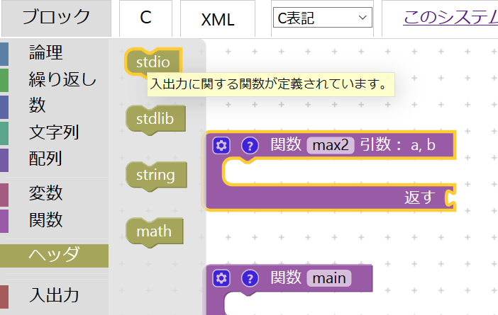

ブロックの組み立て方(C編)
下図は、Blockly for C のワークスペースにブロックが何も組み立てられていない初期状態です。
以下のCコードをBlocklyで組み立てます。
注) C言語をある程度マスターしている方ならお気づきかと思いますが、一部の文法で誤りがあります。現在、Blocklyのシステムを改善中です。申し訳ございません。
CコードをBlocklyで組み立てる手順
①関数ブロックの設置
ブロックメニュー部の関数カテゴリをクリックして、その一番上のブロックと上から２番目のブロックをワークスペース部にドラッグします(左図)。
配置は、「返す」の表記があるブロックを上に、「返す」の表記がないブロックを下に配置してください。そして、上の関数ブロックの入力フォームに「max2」と書き換えて、下の関数ブロックの入力フォームに「main」と書き替えてください(右図)。
②関数ブロックの引数の設定
さきほど設置した関数main2ブロック(上側)の歯車マークをクリックすると左図のような小さなブロックメニュー部とワークスペース部が表示されます(左図)。
その小さなブロックメニュー部の入力名ブロックを小さなワークスペース部の入力ブロックの内側に接続します。
そして、接続した入力名ブロックの入力フォームにそれぞれ「a」、「b」と書き換えます(右図)。
③ヘッダブロックの設置 ブロックメニュー部のヘッダカテゴリをクリックして、その一番上のstdioブロックをワークスペース部にドラッグします。
④入力・出力ブロックの接続
ブロックメニュー部の入出力カテゴリをクリックして、その一番上のscanfブロックを２つ、printfブロックを1つ、mainブロックの内側に接続します(左図)。
次に、2つのscanfブロックの入力フォームに「%d」と書きます。そして、printfブロックの入力フォームに「大きい方の値は%dです。」と書きます。すると、それぞれのブロックの入力フォームの右隣にソケット（穴）ができたごとが分かります(右図)。これは、入力フォームに「%」があると動的にソケットができる仕組みです。
⑤関数呼び出しブロックの接続 ブロックメニュー部の関数カテゴリをクリックして、その一番下のmax呼び出しブロックをprintfブロックのソケットに接続します。
⑥変数ブロックの接続
ブロックメニュー部の変数カテゴリをクリックして、その一番上の「変数の作成...」をクリックします。すると、新しい変数の名前を入力できる入力フォームが現れます。そこに、「n1」と入力してOKを押します(左図)。すると、変数カテゴリの一番下にn1ブロックが作成されていることが分かります。同様の流れで新しい変数のn2ブロックも作成しておきましょう。
変数カテゴリからn1ブロックとn2ブロックをそれぞれ2個ずつ右図のようにソケットに接続します。
⑦論理ブロックの接続
ブロックメニュー部の論理カテゴリをクリックして、その一番上のもし実行ブロックを関数max2ブロックに接続します。もし実行ブロックの歯車マークをクリックして小さなブロックメニュー部の下側の「そうでなければ」ブロックをワークスペース部のもしブロックの下側に接続します(左図)。
論理カテゴリの上から2番目の比較演算子ブロックをもし実行ブロックの一番上の接続部に接続します。そして、選択フォームをクリックして「>」を選択します(右図)。
⑧変数ブロックの接続
ブロックメニュー部の変数カテゴリをクリックして、その一番上の「変数の作成...」をクリックして、「max」変数ブロックを新たに作成します。変数カテゴリの一番上の代入ブロックを2つ取り出し、もし実行ブロックに左図のように接続してください。その際、代入ブロックがmax以外の表記になっていたら選択フォームでmaxを選択してください。
変数カテゴリからaブロック、bブロックをそれぞれ2個、maxブロックを1個取り出して右図のように接続します。
ブロックの完成図
下図は、前項の手順で組み立てたワークスペース部の完成図です。